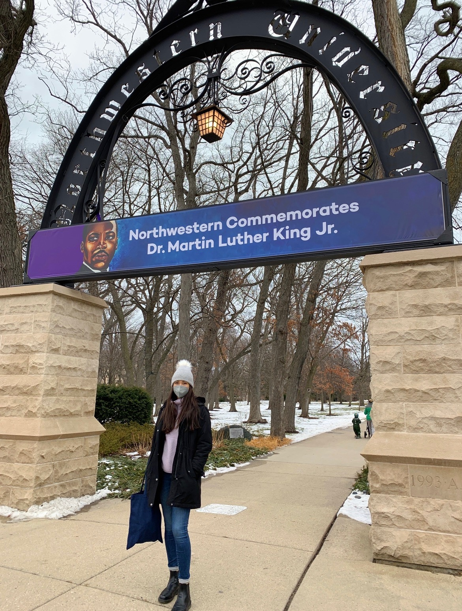
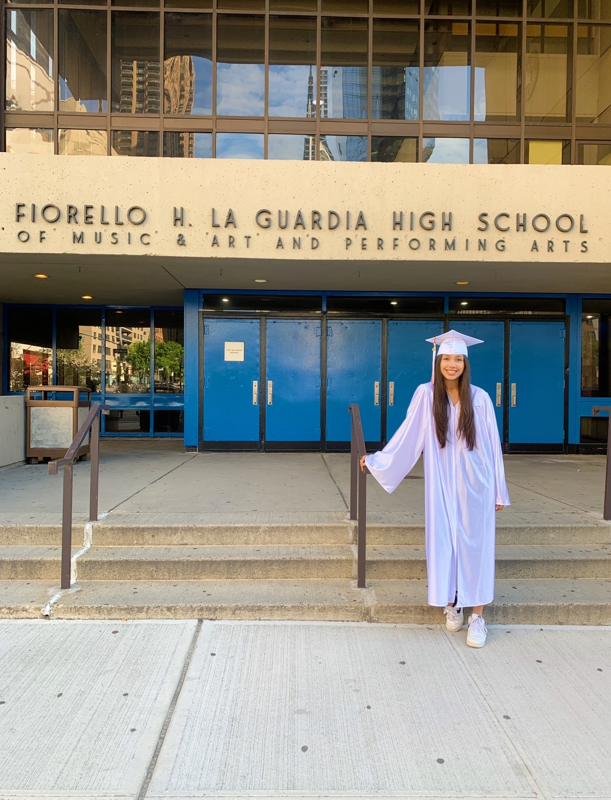
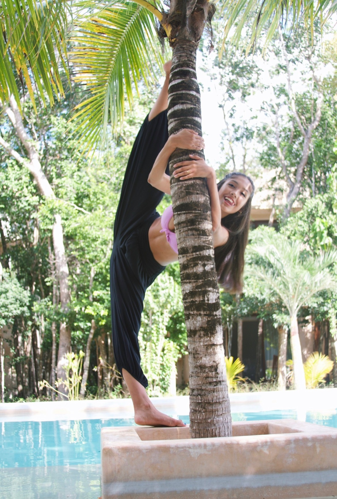
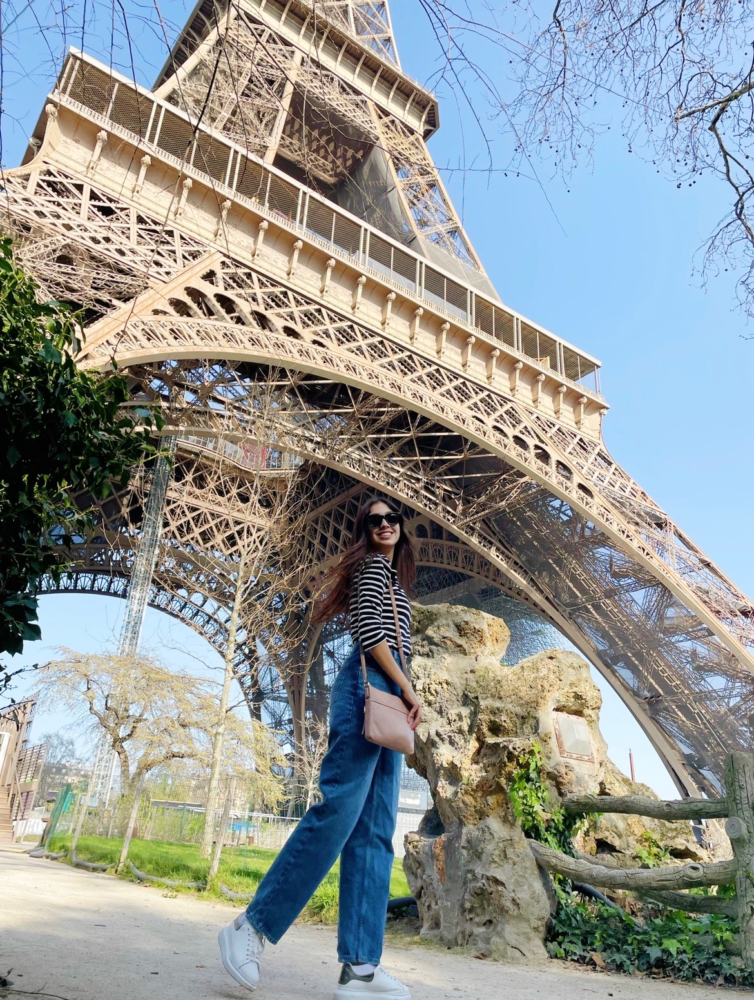
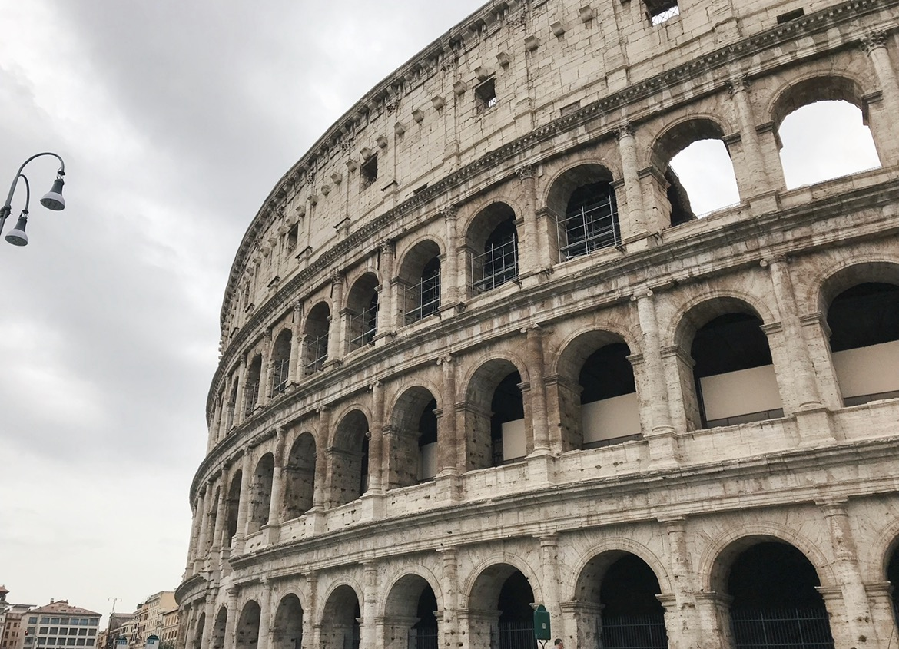
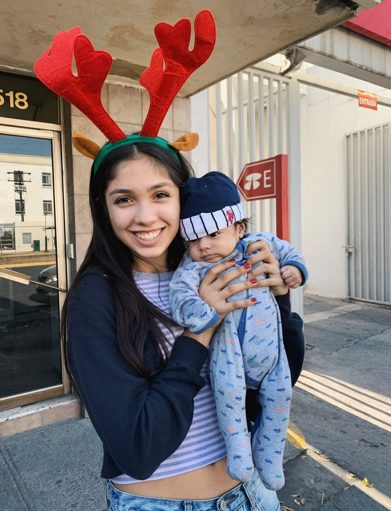
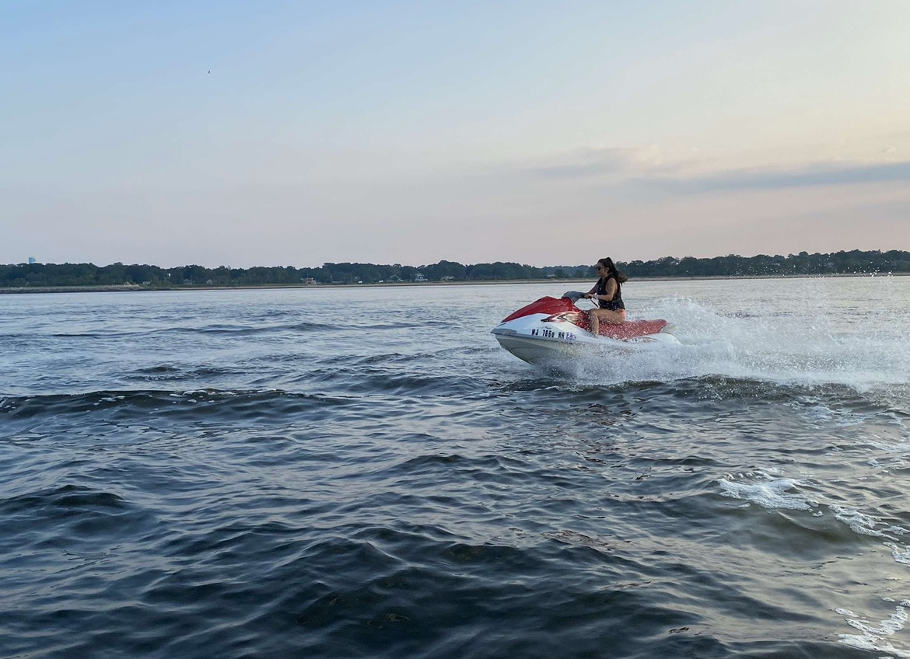
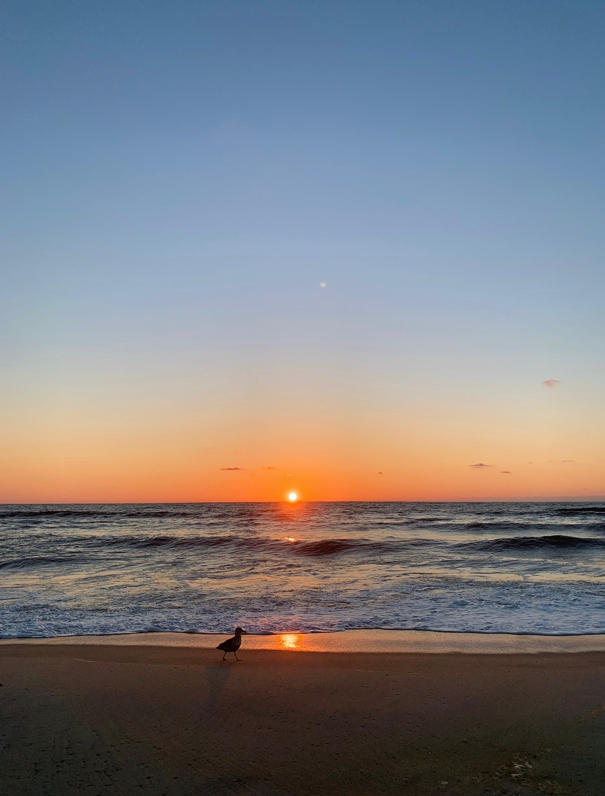

My name is Constanza Estrada Navarro. I am currently a Junior from New York City at
Northwestern University, studying Economics and Computer Science with a Kellogg
Certificate in Financial Economics. My Freshman Summer, I interned at Maestro by
Accordion, a fin-tech firm that sells a subscription based software to private
equity companies to help them organize and create value for their portfolio
companies. After getting to work on both the software and finance side of Maestro,
I became very interested in value creation and getting to learn about growth
strategies and how they are executed in order to help businesses grow. Therefore,
after this internship I began learning more about other areas of finance and I
became interested in private equity and investment banking. This past Summer, I
interned at Tuatara Capital, L.P., a small private equity firm; and next Summer I
will be interning at Evercore as an M&A Summer analyst. I look forward to the steep
learning curve that comes with interning in investment banking, and growing my
network.


Aside from finance, I have a few other passions, the main one being dance. I
trained in classical ballet at American Ballet Theatre’s (ABT) training program
from age 5 till being a Sophomore in high school. I then auditioned for and
attended LaGuardia, a performing arts high school, as a dance major. My freshman
year I was training for a total of 6 hours every day at LaGuardia in the mornings,
and ABT in the evenings. Although I was very grateful to get to train with such a
prestigious company, where I also got the chance to perform at the Metropolitan
Opera House and Lincoln Center, training six hours a day was not only physically
painful, but it took away a lot of time from other passions I was starting to
develop in STEM. Therefore, my sophomore year I decided to leave ABT, and I enjoyed
my last three years of high school training slightly less intensely at LaGuardia. I
currently no longer desire to pursue ballet professionally as I once did, however I
still love to dance as a hobby. Due to a lack of ballet groups at Northwestern, I
co-founded Eight Counts Ballet Company as the director of finance, where I teach
and take ballet classes weekly. This way, I can continue to enjoy a passion of mine
at the club level.

Another activity that I love is traveling. I was born in England, raised in New
York, and my entire family is from Mexico. I think because of my multiple
identities, I have developed the desire to see the whole world. I’ve traveled to
every continent except for Antarctica, but some of my favorite countries I’ve been
to have been Brazil, Spain, France, and Italy. My all time favorite country to
travel to however, is definitely Mexico. Aside from the fact that I like to visit
family, I love going to Mexico because it has my favorite culture, food, music,
types of people, and architecture. There are so many beautiful cities in Mexico that
I have yet to visit, and I hope to see them all one day.


Speaking of Mexico, another one of my interests is a non-profit called Repartiendo
el 24. In 2004, my aunt founded Repartiendo el 24, based in Monterrey Mexico, in
order to help the kids who work on the streets of Monterrey. Throughout the year
we work to collect donations and sponsorships to be able to buy food, toys, and
blankets, rent a bus, and drive around the city on December 24th to distribute
these items, and give the kids the Christmas that they deserve but unfortunately
do not recieve. As of a few years ago, I have begun to take a greater role in the
organization; I now am in charge of finances and social media.


A few final things that I love are music, sunrises, iced coffee, the ocean, and
spending time with friends and family.

